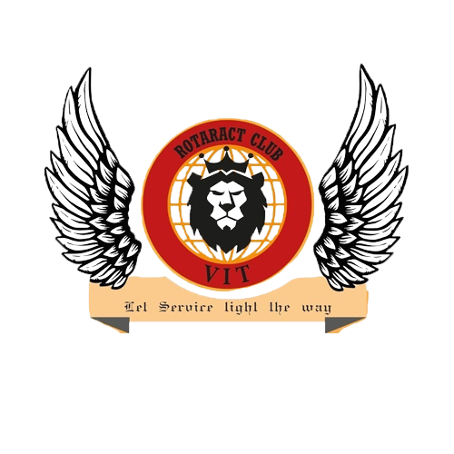

Rotary International is an international service organization whose stated purpose is to bring together business and professional leaders in order to provide humanitarian services, encourage high ethical standards in all vocations, and help build goodwill and peace in the world. It is a secular organization open to all persons regardless of race, colour, creed, religion, gender, or political preference. There are more than 46,000 Rotary and Rotaract clubs and over 1.2 million members worldwide.
THE ROTARACT CLUB of VIT University Chennai, an initiative of The Rotary International, is a service club for students of VIT to organize service-oriented activities, develop leadership and professional skills, and socialize amongst peers. Rotaract helps one to develop professional and leadership skills. It also provides opportunities for young people to address the needs and concerns of the community and the whole world. For joining Rotaract one must have the mindset to render selfless service to humanity and also at every time you must be ready to surrender the 4T's, namely, Time, Talent, Treasure and Thinking.
Providing Safe and Clean Drinking Water.
Supporting Education.
Spreading Awareness and Protecting the Environment.
Saving Women and Children.
Fighting Diseases.
Promoting Peace.
And Many More...